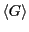
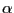
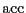

Next: Case Study 1: The
Up: Monte Carlo Simulation
Previous: Monte Carlo Simulation
The Metropolis Monte Carlo Method
Monte Carlo is in general a technique for performing numerical
integration. Consider the following integral:
Now imagine that we have a second function, , which is positive
in the interval . We can also express as
If we think of
as a probability density,
then what we have just expressed is the average of the quantity
on  in the interval :
in the interval :
This implies that we can approximate by picking  values
values
 randomly out of the probability distribution and computing
the following sum:
randomly out of the probability distribution and computing
the following sum:
Note that this approximates the mean of as long as pick a
large enough number of random numbers ( is large enough) such that
we ``densely'' cover the interval . If
is
uniform on ,
and therefore,
The next question is, how good an approximation is this, compared with
more traditional one-dimensional numerical integration techniques,
such as Simpson's rule and quadrature? A better phrasing of this
question is, how expensive is this technique for a given level of
accuracy, compared to traditional techniques? Consider this means to
compute  :
:
Allen and Tildesley [2] mention that, in order
use Eq. 62 to compute to an accuracy of one part
in 10 requires = 10 random values of , whereas
Simpson's rule required three orders of magnitude fewer points
to discretize the interval to obtain an accuracy of one part in
10. So the answer is, integral estimation using uniform random
variates is expensive.
requires = 10 random values of , whereas
Simpson's rule required three orders of magnitude fewer points
to discretize the interval to obtain an accuracy of one part in
10. So the answer is, integral estimation using uniform random
variates is expensive.
But, the situation changes radically when the dimensionality of the
integral is large, as is the case for an ensemble average. For
example, for 100 particles having 300 coordinates, the configurational
average
 (Eq. 54) could be
discretized using Simpson's rule. If we did that, requesting only a
modest 10 points per axis in configurational space, we would need to
evaluate the integrand
10
times. This is an almost unimaginably large number (a googul cubed).
Using a direct numerical technique to compute statistical mechanical
averages is simply out of the question.
We therefore return to the idea of evaluating the integrand at a
discrete set of points selected randomly from a distribution. Here we
call upon the idea of importance sampling. Let us try to use
whatever we know ahead of time about the integrand in picking our
random distribution, , such that we minimize the number of
points (i.e., the expense) necessary to give an estimate of
to a given level of accuracy.
Now, clearly the states that contribute the most to the integrals we
wish to evaluate by configurational averaging are those states with
large Boltzmann factors; that is, those states for which
is large. It stands to reason that if we randomly select points from
, we will do a pretty good job approximating the integral.
So what we end up computing is the ``average of over
'':
which should give an excellent approximation for
.
The idea of using the as the sampling distribution is due
to Metropolis et al. [6]. This makes the real work
in computing
generating states that randomly sample
.
Metropolis et al. [6] showed that an efficient way to
do this involves generating a Markov chain of states which is
constructed such that its limiting distribution is . A
Markov chain is just a sequence of trials, where (i) each trial
outcome is a member of a finite set called ``state space,'' and (ii)
every trial outcome depends only on the outcome that immediately
precedes it. By ``limiting distribution,'' we mean that the trial
acceptance probabilities are tuned such that the probability of
observing the Markov chain atop a particular state is defined by some
equilibrium probability distribution, . For the following
discussion, it will be convenient to denote a particular state  using
using  , instead of
, instead of  .
.
A trial is some perturbation (usually small) of the coordinates
specifying a state. For example, in an Ising system, this might mean
flipping a randomly selected spin. In a system of particles in
continuous space, it might mean displacing a randomly selected
particle by a small amount  in a randomly chosen direction.
There is a large variety of such ``trial moves'' for any particular
system; we will only deal with a few simple ones in this course.
in a randomly chosen direction.
There is a large variety of such ``trial moves'' for any particular
system; we will only deal with a few simple ones in this course.
The probability that a trial move results in a successful transition
from state to  is denoted and is called
the ``transition matrix.'' It must be specified ahead of time to
execute a traditional Markov chain. Since the probability that a
trial results in a successful transition to any state, the rows
of add to unity:
is denoted and is called
the ``transition matrix.'' It must be specified ahead of time to
execute a traditional Markov chain. Since the probability that a
trial results in a successful transition to any state, the rows
of add to unity:
With this specification, we term a ``stochastic'' matrix.
Furthermore, for an equilibrium ensemble of states in state space, we
require that transitions from state to state do not alter state
weights as determined by the limiting distribution. So the weight of
state :
must be the result of transitions from all other states to state :
For all states , we can write Eq. 67 as a post-op matrix
equation:
where is the row vector of all state weights.
Eq. 68 constrains our choice of . This means
there is still more than one way to specify . Metropolis
et al. [6] suggested:
That is, the probability of transitioning from state to is
exactly equal to the probability of transitioning from state to
. This is called the ``detailed balance'' condition, and it
guarantees that the state weights remain static. Observe:
Detailed balance is, however, overly restrictive; this fact is of
little importance in this course.
Metropolis et al. [6] chose to construct as
where  is the probability that a trial move is attempted, and
 is the probability that a move is accepted. If the
probability of proposing a move from to is equal to that
of proposing a move from to , then
, and the detailed balance condition is written:
from which follows
giving
where we have defined the change in potential energy as
There are many choices for
that satisfy Eq. 74. The original choice of Metropolis is
used most frequently:
So, suppose we have some initial configuration with potential
energy  . We make a trial move, temporarily generating a
new configuration . Now we calculate a new energy, . If this
energy is lower than the original, () we unconditionally
accept the move, and configuration becomes the current
configuration. If it is greater than the original, () we
accept it with a probability consistent with the fact that the states
both belong to a canonical ensemble. How does one in practice decide
whether to accept the move? One first picks a uniform random variate
. We make a trial move, temporarily generating a
new configuration . Now we calculate a new energy, . If this
energy is lower than the original, () we unconditionally
accept the move, and configuration becomes the current
configuration. If it is greater than the original, () we
accept it with a probability consistent with the fact that the states
both belong to a canonical ensemble. How does one in practice decide
whether to accept the move? One first picks a uniform random variate
 on the interval
on the interval ![$[0,1]$](img228.png) . If
, the move is accepted.
. If
, the move is accepted.
The next section is devoted to an implementation of the Metropolis
Monte Carlo method for a 2D Ising magnet.
Next: Case Study 1: The
Up: Monte Carlo Simulation
Previous: Monte Carlo Simulation
cfa22@drexel.edu